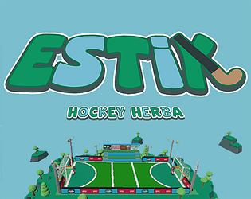
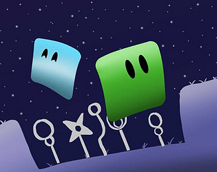
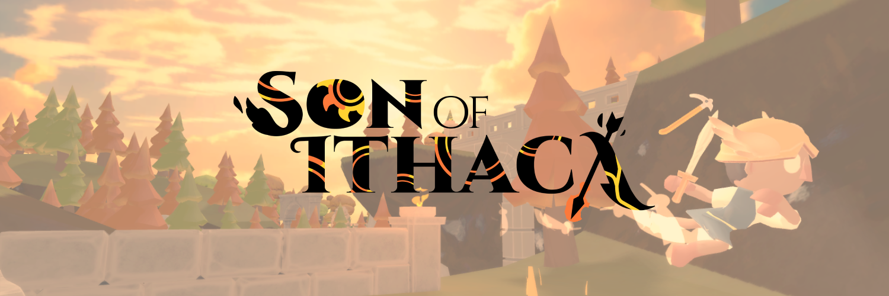
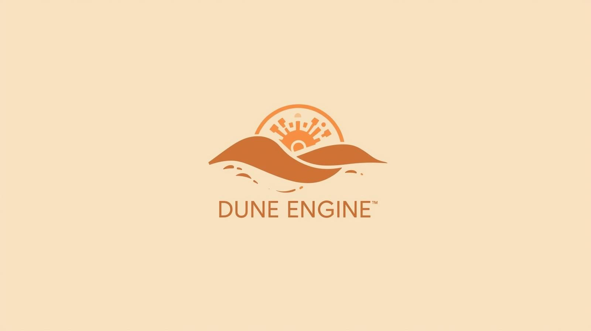
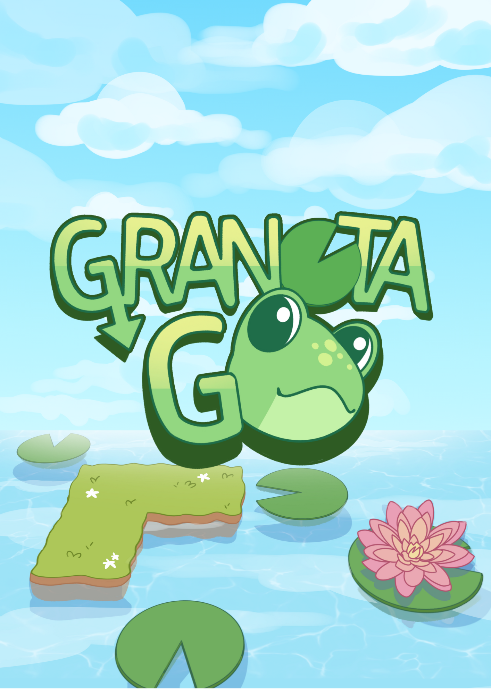
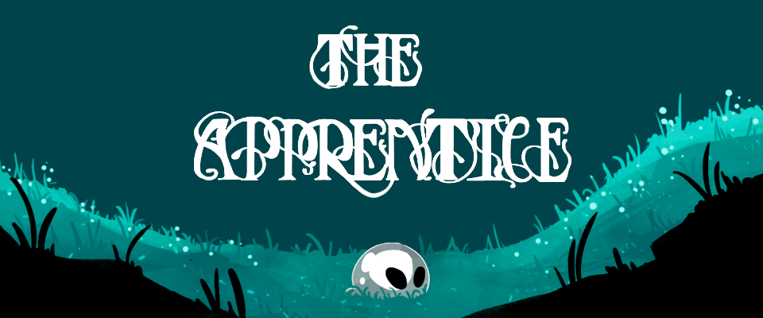
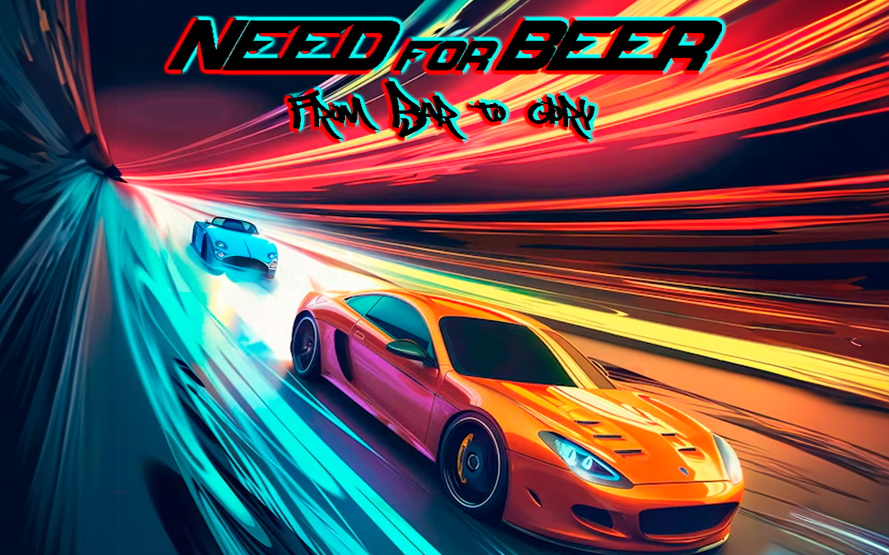

Proyectos
Bienvenido a mi colección de proyectos. Aquí podrás explorar los trabajos que he desarrollado a lo largo de mi formación, con detalles, imágenes y características de cada uno.

Estik
Proyecto publicado en itch.io.

Odossea
Juego cooperativo para 2 jugadores: lanza y comparte masa para resolver puzles y superar plataformas juntos.
Premiado en la 9ª Gran CITM GameJam

Son Of Ithaca
Action-adventure 3D basado en La Odisea: controlas a Telémaco en busca de su padre, Odiseo.

Dune Engine
Motor de juego desarrollado desde cero utilizando SDL3 y OpenGL.

GranotaGo
Juego desarrollado para los Premis Ludi de 3Cat. Controla una rana aventurera en una experiencia 2D.

The Apprentice
Juego 2D de plataformas creado en SDL2 junto a estudiantes de arte digital.

Need For Beer
Juego de carreras basado en física, desarrollado en equipo como proyecto de aprendizaje.